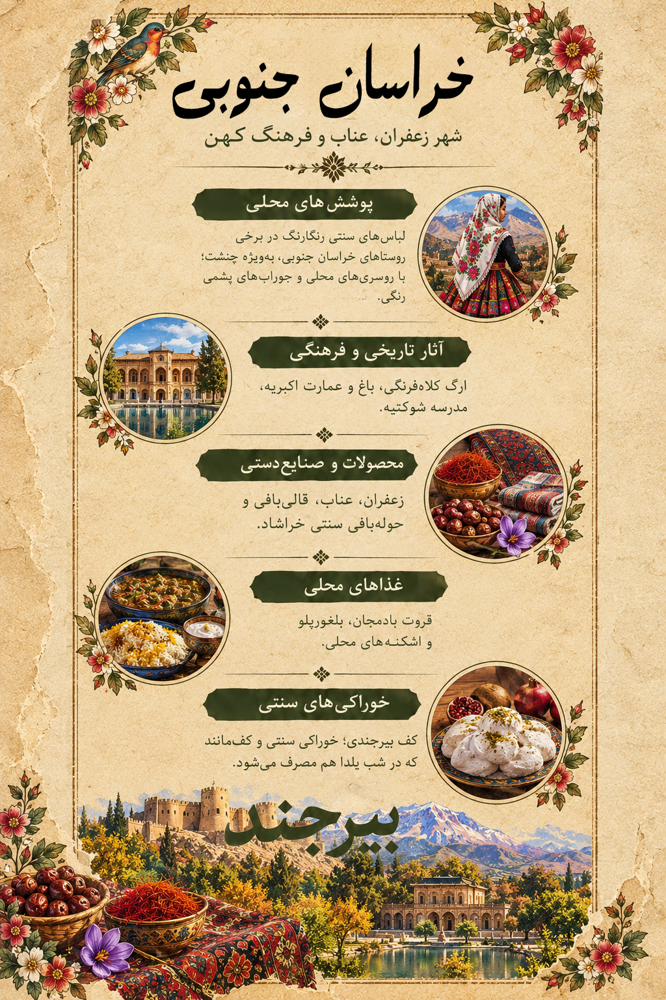

پنجرهای به خراسان جنوبی
A Window into South Khorasan
در جنوب خراسان، رنگ سرخ زرشک، عطر زعفران و معماری خشتی روایتگر پیوند زندگی مردم با اقلیم کویری و فرهنگ دیرپای این سرزمیناند. این اثر، برداشتی هنری از تنوع فرهنگی و پوشش محلی منطقه است.
In South Khorasan, crimson barberries, fragrant saffron and earthen architecture tell a story of life shaped by the desert climate and enduring cultural traditions. This artwork is an artistic interpretation of the region's cultural diversity and traditional dress.

لیبل اطلاعاتی اثر
Artwork Information Label

پوشش زنان؛ رنگ در تار و پود زندگی
Women's Dress: Colour Woven into Daily Life
پوشاک محلی خراسان جنوبی یک شکل واحد ندارد و در شهرها و روستاهای مختلف، با توجه به سنتهای خانوادگی، آبوهوا و فرهنگ بومی تفاوتهایی دیده میشود. سربندها و روسریها، پیراهنها و دامنهای محلی و جزئیات رنگی، بخشی از این تنوع را شکل میدهند.
Traditional clothing in South Khorasan is not uniform. Styles vary among towns and villages according to local customs, climate and community traditions. Head coverings, shirts, skirts and colourful details are among the elements that express this diversity.
چنشت؛ روستای رنگها
Chen Asht: A Village of Colour
روستای چنشت در منابع گردشگری بهخاطر پوشش محلی رنگارنگ و سنتهای فرهنگی خود شناخته میشود. لباس این منطقه را باید در پیوند با هویت و رسمهای بومی آن دید.
Chen Asht village is known in tourism references for its colourful local dress and cultural traditions. Its clothing is best understood in the context of local identity and customs.
جورابهای هفترنگ
Seven-Coloured Socks
جوراببافی رنگی از جلوههای شناختهشده صنایعدستی و پوشاک منطقه بیرجند است؛ نشانهای از ذوق رنگ و مهارت دستبافان محلی.
Colourful knitted socks are among the recognised textile traditions associated with the Birjand area, reflecting local craftsmanship and a love of colour.
یادآوری: تصویر هنری این صفحه بازآفرینی معاصر است و ادعا نمیکند که بازسازی دقیق یک لباس تاریخی یا متعلق به یک روستای مشخص باشد.
Note: The artwork is a contemporary artistic interpretation, not an exact reconstruction of a historical garment or a specific village's dress.
معماری و میراث تاریخی
Architecture and Historical Heritage
عمارت کلاهفرنگی بیرجند
Kolah Farangi Mansion, Birjand
بنایی شاخص با فرم معماری ویژه که به یکی از نشانههای تاریخی بیرجند تبدیل شده است. ساختار سفید و پلکانی آن در کنار باغ و فضای سبز، ترکیبی چشمنواز میسازد.
This distinctive mansion is one of Birjand's notable landmarks. Its white, tiered architectural form creates a striking composition with the surrounding garden and greenery.
روستای ماخونیک
Makhunik Village
ماخونیک با خانههای خشتی و سنگی، گذرگاههای باریک و معماری سازگار با محیط، نمونهای ارزشمند از زندگی سنتی در ناحیه خشک شرق ایران است.
Makhunik is known for its earthen and stone houses, narrow lanes and architecture adapted to the environment. It offers a valuable glimpse into traditional life in eastern Iran's dry landscape.
باغ و عمارت اکبریه
Akbarieh Garden and Mansion
مجموعهای تاریخی در بیرجند که باغ ایرانی، معماری و شیوه طراحی فضا را در کنار هم نشان میدهد و بخشی از میراث فرهنگی استان است.
This historic complex in Birjand brings together Persian garden design and architecture and forms part of the province's cultural heritage.
ارگ فورگ
Forg Citadel
دژی تاریخی در منطقه درمیان که با معماری خشتی و موقعیت کوهستانی خود، چشماندازی از تاریخ و شیوه دفاعی این سرزمین ارائه میکند.
A historic fortress in the Darmian area, Forg Citadel offers a glimpse into the region's history and defensive architecture, set against a mountainous landscape.
محصولات و هنرهای بومی
Local Products and Crafts
زرشک و زعفران
Barberries and Saffron
زرشک از محصولات شاخص خراسان جنوبی است و قائنات به زعفران خود شهرت دارد. رنگ سرخ زرشک و طلایی زعفران، الهامبخش رنگپردازی این بخش از گالری است.
Barberries are a signature product of South Khorasan, while Qaenat is renowned for saffron. Their crimson and golden colours inspire this part of the gallery.
عناب
Jujube
عناب از محصولات شناختهشده استان است و در خوراکیهای محلی و سوغات منطقه جایگاه دارد.
Jujube is a recognised regional product and features among local foods and souvenirs.
قالی مود
Mood Carpet
قالی مود با نقشها و مهارت بافت محلی، بخشی از سنت قالیبافی خراسان جنوبی است؛ هنری که طرح و رنگ را در تار و پود به هم پیوند میدهد.
Mood carpets are part of South Khorasan's carpet-weaving heritage, bringing together local patterns, colour and weaving skill.
توبافی خراشاد
Tow-Bafi of Khorashad
در خراشاد، بافت سنتی پارچه با نخ پنبه و دستگاههای بافندگی محلی ادامه یافته است. دستبافتهها میتوانند برای پوشاک، حوله و دیگر محصولات پارچهای استفاده شوند.
Khorashad preserves traditional cotton weaving using local looms. These textiles are used for clothing, towels and other woven products.
طعمهای محلی خراسان جنوبی
Flavours of South Khorasan
اشکنه
Eshkeneh
اشکنه از خوراکهای ساده و قدیمی ایرانی است که در مناطق مختلف با مواد و شیوههای متفاوت تهیه میشود. در معرفی خوراک محلی استان، بهتر است دستورهای بومی هر منطقه جداگانه بررسی شوند.
Eshkeneh is a traditional Iranian dish prepared in different ways across the country. Local versions should be documented separately when describing the province's food heritage.
آشهای محلی
Local Soups and Ash
آش بلغور و برخی آشهای حبوبات در معرفی خوراکهای سنتی منطقه دیده میشوند. ترکیب مواد ممکن است با توجه به روستا و خانواده متفاوت باشد.
Bulgur-based soups and legume dishes appear in accounts of the region's traditional food. Ingredients can vary between villages and households.
نانهای محلی
Traditional Breads
نان در سفره روزمره و مهماننوازی محلی جایگاه مهمی دارد. برای ثبت نام و شکل دقیق نانهای بومی استان، باید از منابع محلی و مستندات هر شهر استفاده کرد.
Bread plays an important role in everyday meals and hospitality. The exact names and forms of local breads should be checked against local documentation for each town.
کف؛ خوراکی آیینی شب یلدا
Kaf: A Yalda Treat
کف از خوراکیهای آیینی شناختهشده در برخی نواحی خراسان جنوبی است که با ریشه گیاه چوبک تهیه میشود و با دورهمیهای شب یلدا پیوند دارد.
Kaf is a traditional treat associated with Yalda gatherings in parts of South Khorasan. It is prepared using the root of the chubak plant.
منابع برای مطالعه بیشتر
Sources for Further Reading
- Visit Iran — خراسان جنوبی
- Visit Iran — توبافی بیرجند
- Encyclopaedia Iranica — پژوهشهای تاریخی و فرهنگی ایران
- ToIran — میراث فرهنگی و گردشگری
- Visit Iran — South Khorasan Province
- Visit Iran — Tow-Bafi of Birjand
- Encyclopaedia Iranica
- ToIran — Cultural Heritage and Travel
متن این صفحه معرفی فرهنگی عمومی است. برای جزئیات دقیق لباسها، نام خوراکها و رسمهای هر روستا، منابع محلی و پژوهشهای مردمنگارانه اهمیت دارند.
This page offers a general cultural overview. Local sources and ethnographic studies are important for documenting village-specific clothing, food names and customs.